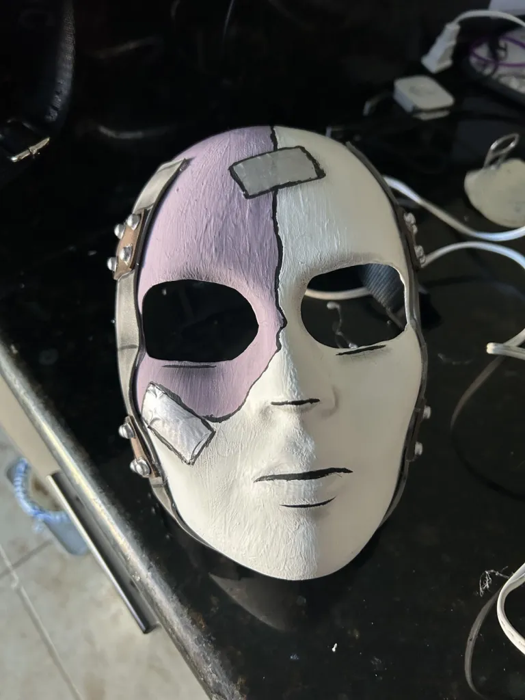

My mother LOVES Halloween. It's her favourite holiday. It's so incredibly influential on who she is that she goes ALL OUT for it moment late September hits.
We have a ton of animatronics and fog machines, tombstones, etc!
We're known as the cemetery of our neighborhood. We even have a customized sign we made!!!!
When I was younger, I would always trick or treat with adults alongside friends.
As I've gotten older, I'd go without family. Mainly with 1 or 2 friends.
My costumes have always been store bought until now.
I was Sal Fisher from Sally Face last year. I made the mask myself.
THIS YEAR, I'LL BE BERDLY FROM DELTARUNE. (I'm chronically online)
Now, why should this convince you that Halloween is superior?
Well, in this aspect, you get to dress up like anything you've ever wanted!
You get to become the character you LOVE! You get to represent the media you enjoy and share it with others around you!
You get to be creative and either make or adjust costumes!
Example of Sal mask below!!!!!

Costumes are a very technical part of Halloween. Obviously if you can't afford most supplies, getting something from the store is good!!
Either way, costumes are one of the best parts of Halloween and is a very primary part of the term "trick or treat"!
Go back to main page?